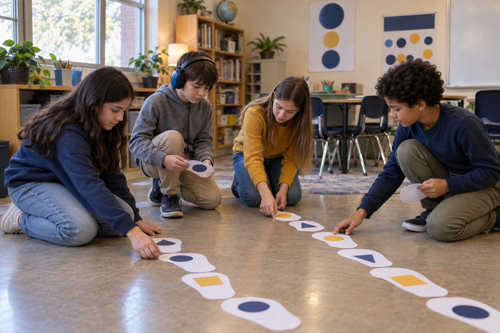

Aprendizaje estudiantil · Grados 3–5 · 35 minutos
El Menú Tecnológico Familiar
Un niño y su familia clasifican una semana de momentos reales con pantallas según el propósito de cada uno, y luego construyen juntos un "menú tecnológico" equilibrado, aprendiendo que el propósito y la variedad importan más que los minutos.
Gran parte del tiempo de pantalla ocurre en piloto automático: el programa que ya estaba puesto, el juego que uno abre sin pensar. Esta lección les da a las familias una manera más tranquila de hablar del uso de pantallas que contar minutos. Los niños clasifican momentos cotidianos con pantallas en cuatro propósitos: Crear, Conectar, Aprender y Descansar, y notan que una pantalla puede ganarse su lugar o simplemente llenar el tiempo. Descubren que usar un dispositivo para grabar un video para la abuela no es lo mismo que usarlo porque no había nada más que hacer, aunque ambos tomen la misma cantidad de minutos. Luego, en casa, el niño guía a la familia para construir un "menú tecnológico": un plan breve y equilibrado de opciones con pantalla y sin pantalla para la semana. El mensaje es honesto y matizado: las pantallas no son el enemigo, y más no es automáticamente malo; lo que importa es para qué se usa la pantalla y qué otras cosas incluye la semana.
En este paquete
- Hoja A: ¿Para qué fue la pantalla? (clasificación de tarjetas)
- Hoja B: Nuestro Menú Tecnológico Familiar (hoja de trabajo)
- Hoja C: Mi Revisión de la Semana (hoja de trabajo)
- Clave del facilitador (última página)
Indicadores ELE de TCEA
- S4.1 Sé cómo asumir la responsabilidad de mi propio aprendizaje.
- S1.1 Sé cómo usar la tecnología para apoyar mi aprendizaje.
- S4.2 Puedo fijar metas alcanzables y dar seguimiento a mi progreso.
- S3.2 Puedo comunicar mis ideas con claridad a los demás.
Guía completa para el facilitador: mglearn.github.io/eles/es/activities/family-tech-menu.html
Hoja A de El Menú Tecnológico Familiar
¿Para qué fue la pantalla?
Clasifica cada momento con pantalla según su propósito. Luego da vuelta la tarjeta: ¿este momento suele ganarse su lugar, o es a menudo piloto automático? Algunos podrían caber en más de una pila; explica por qué elegiste esa.
Crear
Conectar
Aprender
Descansar
Hoja A de El Menú Tecnológico Familiar
¿Para qué fue la pantalla?: tarjetas para clasificar
Recorta las tiras. Coloca cada una en el tapete de clasificación y prepárate para explicar por qué.
Página 1 de 2
Hacer un video de animación con tus juguetes
Hacer una videollamada con un primo que vive lejos
Ver lo que sigue porque el autoplay siguió reproduciendo
Seguir un tutorial de dibujo y luego dibujarlo tú mismo
Elegir un programa a propósito para relajarte después de un día difícil
Abrir un juego por costumbre mientras esperas en una fila
Buscar cuánto mide una ballena azul para un informe
Grabar un mensaje de cumpleaños para un abuelo
Hacer una lista de reproducción para un viaje familiar en carro
Ver clips cortos que olvidas dos minutos después
Escribirle a un amigo para planear quién lleva qué al parque
Practicar tablas de multiplicar en una aplicación de aprendizaje que asignó la maestra
Hoja A de El Menú Tecnológico Familiar
¿Para qué fue la pantalla?: tarjetas para clasificar
Recorta las tiras. Coloca cada una en el tapete de clasificación y prepárate para explicar por qué.
Página 2 de 2
Poner un programa de fondo mientras no haces nada más
Tomar fotos en una caminata por la naturaleza para hacer un álbum familiar
Hoja B de El Menú Tecnológico Familiar
Nuestro Menú Tecnológico Familiar
Comienza esto en la escuela con una idea en cada propósito. Termínalo en casa: decide el menú junto con tu familia, que puede agregar, cambiar o intercambiar ideas. Nota para la familia: esto no es una lista de prohibiciones. Estamos practicando elegir el uso de pantallas a propósito y equilibrarlo con tiempo sin pantalla. Por favor, construyan esto con su hijo o hija.
CREAR: algo que podríamos hacer con una pantalla esta semana (un video, una presentación, una lista de reproducción, un dibujo).
CONECTAR: una manera en que podríamos usar una pantalla para estar con las personas que queremos esta semana.
APRENDER: algo que podríamos descubrir o practicar con una pantalla esta semana.
DESCANSAR: un programa, juego o video que elegiremos a propósito, y cuándo pararemos.
SIN PANTALLA: dos cosas que hará nuestra familia esta semana sin ninguna pantalla.
Un momento o lugar sin pantalla que elegimos juntos (como la cena o la hora antes de dormir):
Hoja C de El Menú Tecnológico Familiar
Mi Revisión de la Semana
Escribe tu meta ahora. Al final de la semana, vuelve y nota cómo te fue. Esto no es para una calificación, es solo para notar.
Mi meta de uso de pantallas para esta semana (sobre CÓMO uso las pantallas, no solo usarlas menos):
Al final de la semana: una vez en que una pantalla realmente se ganó su lugar.
Al final de la semana: una vez en que me di cuenta de que estaba en piloto automático y qué hice.
Una cosa que queremos cambiar en el menú de la próxima semana:
Solo para el facilitador: El Menú Tecnológico Familiar
Clave de respuestas y notas
Hoja A: ¿Para qué fue la pantalla?
| Elemento | Categoría | Por qué |
|---|---|---|
| Hacer un video de animación con tus juguetes | Crear | Se gana su lugar: estás haciendo algo que antes no existía. |
| Hacer una videollamada con un primo que vive lejos | Conectar | Se gana su lugar: una pantalla te ayuda a estar con las personas que quieres. |
| Ver lo que sigue porque el autoplay siguió reproduciendo | Descansar | Piloto automático: la pantalla eligió, no tú. |
| Seguir un tutorial de dibujo y luego dibujarlo tú mismo | Aprender | Se gana su lugar: la pantalla te enseñó y luego practicaste. |
| Elegir un programa a propósito para relajarte después de un día difícil | Descansar | Se gana su lugar: descansar es un propósito real cuando lo eliges. |
| Abrir un juego por costumbre mientras esperas en una fila | Descansar | Piloto automático: más un reflejo que una elección. |
| Buscar cuánto mide una ballena azul para un informe | Aprender | Se gana su lugar: una pantalla te ayuda a descubrir algo real. |
| Grabar un mensaje de cumpleaños para un abuelo | Conectar | Se gana su lugar: usar una pantalla para compartir cariño a distancia. |
| Hacer una lista de reproducción para un viaje familiar en carro | Crear | Se gana su lugar: estás organizando algo para los demás. |
| Ver clips cortos que olvidas dos minutos después | Descansar | Piloto automático: fácil de empezar, difícil de recordar, difícil de parar. |
| Escribirle a un amigo para planear quién lleva qué al parque | Conectar | Se gana su lugar: una pantalla ayuda a organizar tiempo real juntos. |
| Practicar tablas de multiplicar en una aplicación de aprendizaje que asignó la maestra | Aprender | Se gana su lugar: una pantalla te ayuda a practicar y recibir retroalimentación. |
| Poner un programa de fondo mientras no haces nada más | Descansar | Piloto automático: la pantalla está encendida pero no fue realmente elegida. |
| Tomar fotos en una caminata por la naturaleza para hacer un álbum familiar | Crear | Se gana su lugar: la pantalla te ayuda a crear y guardar un recuerdo. |